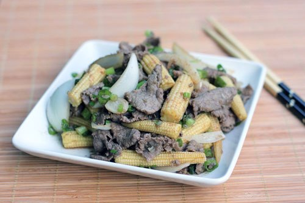

Nguyên liệu:
- 300g thịt bò
- 200g ngô bao tử
- Nửa củ hành tây
- Muối, dầu hào, hành lá, hạt tiêu, tỏi, hạt nêm.
Cách làm:
Bước 1:
- Thịt bò rửa sạch, dùng cán dao đập sơ để khi xào thịt bò được mềm, thái lát mỏng, ướp vào bát thịt một thìa nhỏ dầu ăn, nửa thìa nhỏ muối, một ít hạt tiêu.
Bước 2:
- Ngô bao tử rửa sạch, cắt làm đôi.
- Hành tây rửa sạch, bổ múi cau.
Bước 3:
- Đun nóng dầu, phi tỏi thơm, cho thịt bò vào xào chín tái, đổ ra bát để riêng.
Bước 4:
- Dùng lại chảo đó, cho ngô bao tử vào xào, rưới vào một ít dầu hào, xào cho ngô chín, tiếp theo cho hành tây vào xào cùng, nếu bạn muốn ăn phần hành chín tái thì xào nhanh hành tây.
Bước 5:
- Cho tiếp bát thịt bò ở bước 1 vào xào cùng, đảo đều, nêm nếm lại gia vị cho vừa ăn, tắt bếp, thêm hành lá thái nhỏ vào. Múc thịt ra đĩa dùng làm món xào ăn với cơm.
Cún Khang